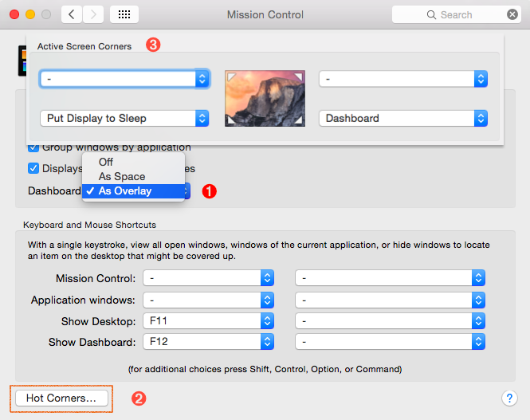
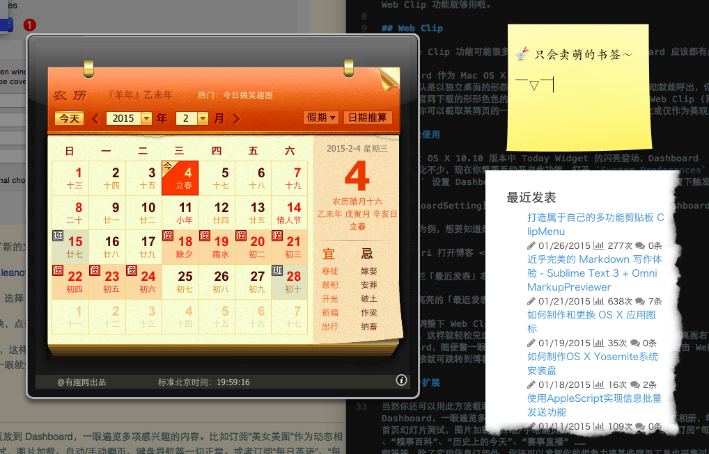
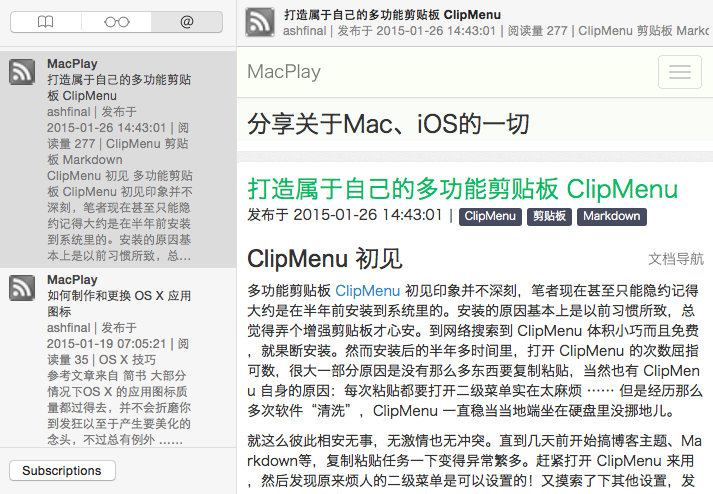

Web Clip & Shared Links - Mac OS X 轻量级的信息订阅工具
事情起因是这样的：前两天有人反馈博客不支持 RSS 订阅功能。笔者一寻思，貌似 RSS 订阅确实是博客必备哈。可是，leanote 目前本身并没有这一功能。于是，笔者转而寻找外部的 RSS Feed 生成工具。可是搜索半天，找到的要么是被墙访问速度慢，要么死贵需要付费(当然最终找到了够用的了)。小发呆了一会，突然转念一想，读者可能就是想在文章发布时能方便及时地知道么？使用系统自带的 Web Clip 功能就够用啦。
Web Clip
提到 Web Clip 功能可能很多人感觉挺陌生，但是要说 Dashboard 应该都有点印象。
Dashboard 作为 Mac OS X 的一项特色功能，10.9 版本时默认是以独立桌面的形态出现的。Trackpad 上四指往右滑动就能呼出，你可以使用各种出厂自带的或从官网下载的形形色色的桌面挂件。其中有个挂件名称就叫 Web Clip (网页剪报？)，使用它你可以截取某网页的一小部分区域，方便地监视其内容变化或仅作为美观展示。
轻松使用
随着 Mac OS X 10.10 版本中 Today Widget 的闪亮登场，Dashboard 本身被弱化不少，现在你需要手动开启此功能。打开 System Preferences - Mission Control 设置 Dashboard 为叠层显示。建议根据图示步骤，顺便设置下触发角：：

以本博客为例，想要知道是否发布了新的文章？只需如下设置即可：
-
Safari 打开博客 http://macplay.github.io
-
侧边栏「最近发表」右键单击，选择
Open in Dashboard -
选择高亮的「最近发表」内容块，点击右上角的
Add
最后简单调整下 Web Clip 默认外观，这样就轻松完成了一项美观实用的网页剪报。当你将鼠标移动到桌面右下角的时候就能触发 Dashboard，随便瞥一眼就知道 MacPlay 是否有新文章发表啦。然后点击 Web Clip 里面的链接就可跳转到博客网站阅读全文。
进阶扩展
当然你还可以用此方法截取更多网页放到 Dashboard，一眼遍览多项感兴趣的内容。比如订阅“美女美图”作为动态相册，笔者用 MacPlay 首页幻灯片测试，图片加载、自动/手动翻页、键盘导航等一切正常。或者订阅“每日英语”、“每日笑话”、“糗事百科”、“历史上的今天”、“赛事直播” …… 等等。除了实现信息订阅外，你还可以发挥你的想象力将某些网页工具也采集过来。比如好些人抱怨 Mac OS X 没有农历/节假日等功能支持，以至于花钱买应用只为在 Menubar 下方或 Today Widget 里显示日历。其实我们完全可以从网络上“剪”一个回来，如下图所示。

此外记住，我们生活的时代网络上有各种免费的互联网服务，如果你经常访问某网站使用其提供的网页工具，不妨考虑将其剪藏到 Dashboard 。这个涉及的范围就太宽广，笔者这里就不继续展开了。而你使用的时候仅需将鼠标移到桌面右下角即可。（≧∇≦）
Shared Links
Shared Links 作为 Safari 浏览器自带功能，以左侧边栏的形式出现。你可以通过菜单栏 View - Show Shared Links Sidebar 将其显示出来，或者点击默认工具栏第三个按钮，切换快捷键为 ⌃ + ⌘ + 3。如果你之前配置过网络账户比如微博的话，首次打开它会刷新显示你的微博时间轴内容。但是我们这里主要关注的是：它同时也是一个轻量级的 RSS 订阅器。
前面提到笔者最终找到了免费够用的 RSS Feed 生成器，花了点时间配置到博客上(终于有 RSS 订阅功能啦)。当我们访问包括本博客在内的任何支持 RSS 订阅的网站时，只要点击订阅按钮/链接，就会弹窗询问是否将该网站添加到 Shared Links。确认后就会在侧边栏显示最近更新的内容摘要啦，当然你也可以点击菜单栏 View - Update Shared Links 来手动刷新内容显示。对内容详情感兴趣的话，点击相应条目打开网站阅读全文。并且滚动到文首/文末的时候会自动跳转到上/下一条目，这个细节做得非常赞。

想要退订某订阅源的话，点击侧边栏下方的 Subscriptions，从 Subscribed Feeds 中将其删除即可。
作为轻量级的信息订阅工具，当然没有什么标记已读、快捷键导航等专业客户端才有的高级功能啦。但是对于轻度用户来说，自带的功能已经足够用了。至于我，自从 Google Reader 关闭后就不怎么折腾 RSS 客户端了 ……
结束语
目前 MacPlay 博客发表文章时，如无特殊均会在微博同步发布消息。建议点击博客右上角链接关注 我的微博，方便进一步获取资讯和沟通交流。
本文简要探讨了使用 Mac OS X 系统自带功能来实现轻量级的信息订阅，你是如何获取所关注内容的更新提醒的？欢迎留言分享你喜欢的软件应用或使用技巧～
发布/更新于：
版权声明：如无特别说明，本站文章均遵循 CC BY-NC-SA 4.0 协议，转载请注明作者及出处。